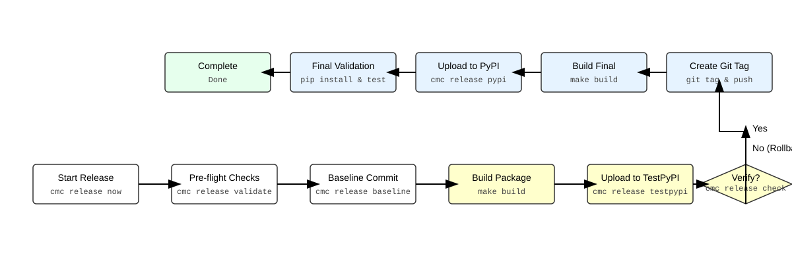

Cloudmesh AI Release Automation
Cloudmesh AI Release is an automation extension for the cmc (Cloudmesh Commands) tool. It transforms the error-prone process of releasing Python packages to PyPI into a structured, wizard-driven workflow.
By enforcing pre-flight checks, managing state, and providing a "safety net" via baseline commits, it ensures that every release is consistent, documented, and reversible.
Installation
Recommended: Using pipx
For the best experience with CLI tools, use pipx to install cloudmesh-ai-release in an isolated environment.
To install from a local directory:
Using pip
If you prefer a standard installation in your current environment:
To install from a local directory:
Quickstart
The tool is designed to be flexible regarding your working directory. You can run it from a parent directory by specifying the package path, or from within the package directory itself.
Option 1: The Wizard (Recommended)
Run the interactive wizard that guides you through all steps.
From a parent directory:
From within the package directory:
The tool will automatically detect the actual package name from the pyproject.toml file located at the specified path.
Option 2: Bulk Releases
Manage and execute releases for multiple packages in a single session.
# Add packages to the release plan
cmc release plan add cloudmesh-ai-common
cmc release plan add cloudmesh-ai-cmc
# List planned packages
cmc release plan list
# Execute the release wizard for all planned packages
cmc release plan do
Option 3: Granular Control
Execute each phase manually:
cmc release validate cloudmesh-ai-cmc
cmc release baseline cloudmesh-ai-cmc
cmc release testpypi cloudmesh-ai-cmc
cmc release pypi cloudmesh-ai-cmc
cmc release check cloudmesh-ai-cmc
Usage
Usage:
cmc release now [options] <package_path>
cmc release validate <package_path>
cmc release baseline [options] <package_path>
cmc release testpypi [options] <package_path>
cmc release pypi [options] <package_path>
cmc release check <package_path>
cmc release version [action] <package_path>
cmc release clean-tags [options]
cmc release plan add <package_name>
cmc release plan list
cmc release plan do [options]
cmc release (-h | --help)
Options:
-h --help Show this screen.
--dry-run Simulate the process without making changes.
--version <text> Specify the target version for the release.
--skip-testpypi Skip the TestPyPI validation phase.
Subcommand Details
now
The primary entry point for releasing a package. It initiates an interactive wizard that includes a Version Review table to confirm projected versions before proceeding.
<package_path>: The path to the root directory of the package.--dry-run: Simulates the entire process.--version <text>: Force a specific target version.--skip-testpypi: Skip the TestPyPI validation phase.
plan
Manage bulk releases across multiple packages.
- add <package>: Adds a package to the release configuration.
- list: Displays all packages currently in the release plan.
- do: Executes the release wizard sequentially for all planned packages.
version
Manage the VERSION file directly.
- dev+ <package>: Increments the .devN suffix in the VERSION file.
- prod+ <package>: Increments the patch version in the VERSION file.
- <package>: Displays the current version and suggested next increments.
clean-tags
Interactively clean up Git tags.
- --all: Show all tags. By default, it only shows .dev tags.
- Use this to remove stale development tags from both local and remote repositories.
Versioning Lifecycle
This tool uses a VERSION file in the package root as the source of truth, synchronized with Git tags.
How it Works
The tool follows a strict versioning cycle to prevent collisions between TestPyPI and production releases:
- The Source of Truth: The
VERSIONfile and the most recent Git tag define the current state. - Version Projection: Before starting, the tool analyzes PyPI, TestPyPI, and Git tags to project the next logical versions. It performs "smart projection" by automatically incrementing the suggested version if the projected one already exists on PyPI, preventing upload failures.
- The TestPyPI Cycle (
.devversions): To avoid uploading a version to TestPyPI that might already exist on PyPI, the tool automatically calculates a development version.- If the last stable version was
1.2.3, the tool suggests1.2.4.dev1for TestPyPI.
- If the last stable version was
- The Production Cycle:
Once the TestPyPI version is verified, the tool creates the official stable tag (e.g.,
v1.2.4) and uploads it to PyPI. - Automatic Baseline Bump: Immediately after a successful PyPI release, the tool automatically bumps the patch version and creates a new baseline tag for the next development cycle.
Overriding the Version
You can force a specific target version using the --version flag:
cmc release now <package> --version 1.2.4
How it Works: The Release Lifecycle
The release process is designed as a safety-first pipeline.
Workflow Diagram

graph LR
%% Style Definitions
classDef white fill:#ffffff,stroke:#333,stroke-width:1px;
classDef yellow fill:#ffffcc,stroke:#d4d4aa,stroke-width:1px;
classDef blue fill:#e6f3ff,stroke:#adcceb,stroke-width:1px;
classDef green fill:#e6ffed,stroke:#c2e0c6,stroke-width:1px;
Develop[Develop<br/><small>develop your code</small>] --> A[Start Release<br/><small>cmc release now</small>]
A --> B{Pre-flight Checks<br/><small>cmc release validate</small>}
B -- Fail --> C[Stop/Fix]
B -- Pass --> D[Create Baseline Commit<br/><small>cmc release baseline</small>]
D --> E[Build Package<br/><small>make build</small>]
E --> F[Upload to TestPyPI<br/><small>cmc release testpypi</small>]
F --> G{User Verifies Install?<br/><small>cmc release check</small>}
G -- No -.-> Develop
G -- Yes --> I[Create Git Tag<br/><small>git tag & push</small>]
I --> J[Build Final Artifacts<br/><small>make build</small>]
J --> K[Upload to PyPI<br/><small>cmc release pypi</small>]
K --> M[Final Validation<br/><small>pip install & test</small>]
M --> L[Release Complete<br/><small>Done</small>]
L -.-> Develop
%% Assign Classes
class Develop,A,B,C,D white;
class E,F,G,H yellow;
class I,J,K blue;
class L green;Detailed Phases
Phase 1: Pre-flight Validation
Verifies dependencies (git, twine, python), the build module, and ensures the Git working directory is clean.
Phase 2: Establishing the Baseline
Captures the current HEAD commit and creates a "Baseline" commit to ensure a 100% recovery path.
Phase 3: TestPyPI Validation (The Sandbox)
- Version Calculation: Determines the next
.devversion. - Build & Upload: Builds artifacts and uploads them to TestPyPI.
- Verification: The wizard pauses for manual installation verification.
Phase 4: Production Release
- Git Tagging: Creates the official stable tag (e.g.,
v1.2.4). - Build & Upload: Re-builds artifacts and uploads to PyPI after double-confirmation.
- Post-Release: Automatically bumps the version for the next cycle.
Safety Mechanisms
Audit Logging
Every release creates a release_<version>.log file containing timestamps, executed commands, and full STDOUT/STDERR.
Configuration & Requirements
Authentication
Relies on twine. Configure credentials via environment variables:
System Requirements
- Python 3.8+
- Git: Configured with a remote
origin. - Twine:
pip install twine - Build:
pip install build
Development & Contribution
Local Installation
Development Workflow
Use the provided Makefile:
| Target | Action |
|---|---|
make test |
Run the pytest suite |
make test-cov |
Run tests with coverage report |
make build |
Build sdist and wheel distributions |
make check |
Validate distribution metadata using twine |
make clean |
Remove build artifacts and cache |
License
Apache License, Version 2.0
Core Dependencies
This project depends on the following core components of the Cloudmesh AI ecosystem: - cloudmesh-ai-common - cloudmesh-ai-cmc